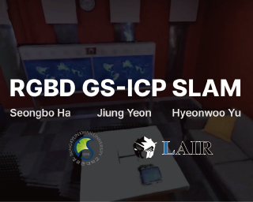

About me
I am a M.S.-Ph.D combined course student in Intelligent Robotics at Sungkyunkwan Univ., advised by Professor Hyeonwoo Yu. Previously, I received B.S. in Electrical Engineering and Future Mobility from University of Ulsan.
Research Interest
My research interests lie in SLAM and 3D representation, with the goal of enhancing robots' spatial understanding. Currently, I'm focusing on making robust and real-time dense representation SLAM.
Publications
